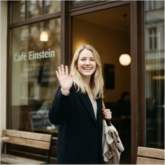

deutschoderwas · Sprechclub · Woche 1 · Strang D · Teil 1 · Dienstag, 15. September
Small Talk, der nicht wehtut
Zwei Minuten im Fahrstuhl, zwölf Sekunden Stille. Heute lernst du die Fragen, mit denen ein Gespräch anfängt — und die Themen, die man besser lässt.
Dein Niveau
Gleiches Thema, andere Sätze. B1 übt die sicheren Fragen, B2 die Nuancen und das Register.
Zwölf Sekunden Stille
Schaut euch das Bild an. Ihr steht nebeneinander und wartet. Was sagt man — und was sagt man auf keinen Fall?
Fällt dir Small Talk leicht oder schwer?
Über welche Themen sprichst du mit Fremden?
Was ist schlimmer: Stille oder ein falsches Thema?
Ist Small Talk oberflächlich — oder ist er die Eintrittskarte für alles Weitere?
Welche Themen sind in deinem Land sicher, die hier heikel wären? Und umgekehrt?
Woran merkst du, dass jemand aus Höflichkeit fragt und nicht aus Interesse?
🗣️ Sprecht reihum: „Mit Fremden rede ich über …“ · „Unangenehm wird es, wenn …“ · „Am liebsten sage ich als Erstes …“
Es geht nicht um den Inhalt
Beim Small Talk interessiert niemanden wirklich das Wetter. Es geht um ein Signal: Ich sehe dich, ich bin freundlich, wir können reden. Der Inhalt ist nur der Anlass.
Warum funktioniert ausgerechnet das Wetter überall als Thema?
Was passiert, wenn man beim Small Talk zu ernst antwortet?
Wie lang darf ein Small Talk sein, bevor er anstrengend wird?
👀 Zu zweit, dreißig Sekunden: Stellt euch nebeneinander, als wartet ihr auf den Fahrstuhl. Einer fängt an. Keine Pause länger als drei Sekunden. Dann tauschen.
Zwölf Wörter für die ersten Sätze
Sagt jedes Wort laut — und gleich den Beispielsatz hinterher. Erst dann bleibt es hängen.

der Small Talk
„Ein bisschen Small Talk gehört hier einfach dazu.“
💡 Das deutsche Wort dafür wäre die Plauderei — sagt aber fast niemand. Small Talk versteht jeder.
🌦️
das Wetter
„So ein Wetter im September, kaum zu glauben!“
💡 Das sicherste Thema der Welt. Und beliebt: Wahnsinn, oder? als Antwort — das reicht schon.
sich vorstellen
„Darf ich mich kurz vorstellen? Ich bin Kaya.“
💡 Reflexiv mit Akkusativ: mich, dich, sich. Achtung: sich etwas vorstellen (Dativ) heißt „sich denken“.
🛗
der Fahrstuhl
„Im Fahrstuhl sagt man wenigstens Guten Morgen.“
💡 Auch der Aufzug oder der Lift. Der klassische Ort für Small Talk — und für peinliche Stille.
die Kaffeeküche
„In der Kaffeeküche erfährt man mehr als in jedem Meeting.“
💡 Der zweite große Ort für Small Talk im Büro. Auch die Teeküche — je nach Firma.
das Wochenende
„Und, was haben Sie am Wochenende gemacht?“
💡 Die häufigste Montagsfrage in Deutschland. Antworte in zwei Sätzen und frag zurück — mehr will niemand hören.
die Gemeinsamkeit
„Sobald man eine Gemeinsamkeit findet, läuft das Gespräch von allein.“
💡 Das eigentliche Ziel jedes Small Talks. Die passende Wendung: Ach, Sie auch?
die Anschlussfrage
„Ohne Anschlussfrage ist das Gespräch nach zwei Sätzen zu Ende.“
💡 Die Frage, die auf die Antwort des anderen aufbaut. Sie ist der Unterschied zwischen Verhör und Gespräch.
heikel
„Gehalt und Politik sind hier heikle Themen.“
💡 Heißt: unangenehm, riskant. ein heikles Thema, eine heikle Frage. Sehr nützliches Wort.
der erste Eindruck
„Für den ersten Eindruck gibt es keine zweite Chance.“
💡 Fester Satz, den hier jeder kennt. Und: einen guten Eindruck machen.
warten
„Wir warten hier schon eine Viertelstunde, oder?“
💡 Gemeinsames Warten ist der beste Anlass für Small Talk: Ihr habt schon etwas gemeinsam — die Situation.
🙂
unverbindlich
„Halte es unverbindlich, dann kann sich niemand unwohl fühlen.“
💡 Das Gegenteil ist persönlich. Small Talk bleibt unverbindlich — genau deshalb funktioniert er.
💡 Spiel: Verdeckt die Wörter. Wer eine Karte trifft, baut daraus eine Frage an einen Fremden — keine Aussage.
Drei Zonen, und wo die Grenze liegt
Erst die drei Themenzonen im deutschsprachigen Raum. Darunter drei Sätze richtig und falsch nebeneinander.
✅
Sicher
Geht immer, überall, mit jedem.
Wetter · Anfahrt · Essen · Wochenende · die Situation hier
⚠️
Kommt darauf an
Erst, wenn der andere es selbst anspricht.
Familie · Wohnort · Beruf im Detail · Gesundheit
🚫
Heikel
In Deutschland fast immer zu privat.
Gehalt · Miete · Politik · Religion · Gewicht · Alter
✅ Öffnet das Gespräch
Und, was haben Sie am Wochenende gemacht?
Warum das funktioniertEine offene Frage — der andere kann in zwei Sätzen oder in zehn antworten. Er entscheidet.
❌ Schließt es
Hatten Sie ein schönes Wochenende?
Das ProblemAuf eine Ja-Nein-Frage folgt „Ja, danke“ — und dann steht ihr wieder in der Stille.
✅ Angenehm
Sind Sie auch neu hier?
Warum das funktioniertSie fragt nach der gemeinsamen Situation, nicht nach der Person. Das ist immer sicher.
❌ Zu persönlich
Und, was verdienen Sie hier so?
Das ProblemÜber Geld spricht man in Deutschland nicht mit Fremden — auch nicht scherzhaft.
✅ Hält das Gespräch
Wandern? Wo waren Sie denn unterwegs?
Warum das funktioniertEine Anschlussfrage greift ein Wort der Antwort auf. So merkt der andere, dass wirklich zugehört wurde.
❌ Bricht ab
Wandern? Aha. Und wo wohnen Sie?
Das ProblemEin Themenwechsel ohne Anschluss wirkt wie ein Fragebogen. Und die Wohnfrage ist noch dazu heikel.
Egal wo, egal mit wem — einer davon passt:
Die Situation: „Ganz schön voll heute, oder?“
Das Wetter: „So ein Wetter im September — Wahnsinn.“
Die Anfahrt: „Sind Sie gut hergekommen?“
Das Naheliegende: „Ist der Kaffee hier zu empfehlen?“
Alle vier haben eines gemeinsam: Sie fragen nach etwas, das ihr beide gerade erlebt. Deshalb ist keine davon zu privat.
⚖️ Kurzübung: Jeder nennt ein Thema, die Gruppe ordnet es zu — sicher, kommt darauf an, heikel. Wo seid ihr euch uneinig?
Die vier Schritte eines guten Small Talks
Ansprechen, offen fragen, anschließen, spiegeln. Vier Schritte, und aus zwölf Sekunden Stille werden zwei Minuten Gespräch.
1 · 👋 Ansprechen Ganz schön voll heute, oder?Guten Morgen — auch so früh dran?Warten Sie auch schon lange?
So klingt esGanz schön vollheute, oder?
2 · 🔓 Offen fragen Was haben Sie am Wochenende gemacht?Wie sind Sie hergekommen?Wie gefällt es Ihnen hier?
So klingt esWashaben Sie am Wochenende gemacht?
3 · 🔗 Anschließen Ach, wirklich? Und wie war es?Wandern? Wo denn?Das klingt gut — machen Sie das oft?
So klingt esWandern? Und wo waren Sie denn unterwegs?
4 · 🪞 Spiegeln Und Sie?Bei mir war es ähnlich.Ach, Sie auch?
So klingt esAch, Sie auch?Bei mirwar es ganz ähnlich.
1 · 👋 Ansprechen mit Anlass Darf ich fragen, ob hier noch frei ist?Sie sind sicher auch wegen der Tagung hier?Ich habe Sie vorhin schon gesehen —
So klingt esSie sindsicher auch wegen der Tagung hier?
2 · 🔓 Offen fragen, ohne auszufragen Wie sind Sie zu dem Thema gekommen?Was hat Sie hierher verschlagen?Was war für Sie der interessanteste Teil?
So klingt esWaswar für Sie heuteder interessanteste Teil?
3 · 🔗 Anschließen und vertiefen Das würde mich näher interessieren —Wie meinen Sie das genau?Da bin ich ganz bei Ihnen, weil …
So klingt esDaswürde mich näher interessieren — wie meinen Sie das genau?
4 · 🪞 Etwas von sich geben Bei mir war es umgekehrt: …Ich kenne das — als ich …Interessant, ich hätte das anders erwartet.
So klingt esBei mirwar es genau umgekehrt: Ich bin erst später dazugekommen.
Verb worum es geht Zeit und Menge Höflichkeit
🗣️ Sofort anwenden: Jeder führt einen Small Talk von genau vier Sätzen — ansprechen, fragen, anschließen, spiegeln. Danach ist Schluss, egal wie gut es lief.
Vier Begegnungen — zwei Runden
Runde 1: Lest den Dialog zu zweit laut. Runde 2: Auf den Knopf tippen — B verschwindet, und ihr antwortet selbst. Die Regieanweisung bleibt als Hilfe stehen.
Dialog 1 · „Der erste Tag“
Neu in der Firma. In der Kaffeeküche steht jemand, den du nicht kennst.
A
Morgen! Sie sind neu, oder?
B
Guten Morgen, ja — seit heute. Darf ich mich vorstellen? Kaya Demir.
🗣️ Grüße, bestätige, stell dich vor. Alles in einem Zug.tippen = Hilfe zeigen
A
Ines Kramer, Buchhaltung. Und, gut hergekommen?
B
Ganz gut, nur die Straßenbahn war voll. Fahren Sie auch mit den Öffis?
🗣️ Antworte kurz und stell sofort eine Anschlussfrage zur gleichen Sache.tippen = Hilfe zeigen
A
Immer. Mit dem Auto stehen Sie hier morgens ewig.
B
Gut zu wissen. Ist der Kaffee hier eigentlich zu empfehlen?
🗣️ Reagiere und wechsel zu etwas, das ihr beide gerade vor euch habt.tippen = Hilfe zeigen
A
Ehrlich? Nein. Aber gegenüber gibt es einen guten.
B
Das merke ich mir. Danke — bis später!
🗣️ Nimm den Tipp an und beende freundlich. Zwei Minuten reichen.tippen = Hilfe zeigen
Dialog 2 · „An der Haltestelle“
Der Bus hat Verspätung. Neben dir steht jemand mit einem Hund.
B
Wir warten hier schon eine Viertelstunde, oder?
🗣️ Sprich die gemeinsame Situation an. Das ist immer sicher.tippen = Hilfe zeigen
A
Achtzehn Minuten. Ich zähle mit.
B
Auch eine Methode. Ist das immer so auf dieser Linie?
🗣️ Nimm den Scherz auf und stell eine offene Frage zur Lage.tippen = Hilfe zeigen
A
Freitags eigentlich immer. Montags geht es.
B
Dann weiß ich Bescheid. Und Ihr Hund — der wartet ja geduldiger als wir.
🗣️ Bedanke dich für die Information und knüpf an etwas Sichtbares an.tippen = Hilfe zeigen
A
Der kennt das schon. Sieben Jahre dieselbe Haltestelle.
B
Sieben Jahre! Da hat er mehr Geduld als ich.
🗣️ Greif die Zahl auf — so merkt der andere, dass du zugehört hast.tippen = Hilfe zeigen
Dialog 3 · „Auf einer Feier“
Du kennst nur den Gastgeber. Neben dir steht jemand allein am Tisch.
B
Ist hier noch frei? Ich kenne hier auch fast niemanden.
🗣️ Frag und gib gleich zu, dass es dir genauso geht. Das verbindet sofort.tippen = Hilfe zeigen
A
Klar, setzen Sie sich. Woher kennen Sie Timo?
B
Aus dem Sprachkurs, vor drei Jahren. Und Sie?
🗣️ Antworte kurz, mit einem Detail — und gib die Frage zurück.tippen = Hilfe zeigen
A
Wir arbeiten zusammen. Sprachkurs klingt spannend, welche Sprache?
B
Deutsch. Ich bin damals gerade erst hergezogen.
🗣️ Antworte offen. Ein persönliches Detail lädt zur nächsten Frage ein.tippen = Hilfe zeigen
A
Ach, und wie war das am Anfang?
B
Anstrengend und schön gleichzeitig. Vor allem der Small Talk hat mir gefehlt.
🗣️ Antworte ehrlich in zwei Wörtern und häng eine Beobachtung an.tippen = Hilfe zeigen
Dialog 4 · „Wenn es heikel wird“
Der andere fragt etwas, das dir zu privat ist.
A
Und was verdient man so in Ihrer Branche?
B
Über Zahlen rede ich nicht so gern — aber die Arbeit selbst ist spannend.
🗣️ Sag freundlich, dass du nicht antworten willst, und biete sofort ein anderes Thema an.tippen = Hilfe zeigen
A
Verstehe. Was genau machen Sie denn?
B
Ich arbeite in der Logistik, viel Planung. Und Sie, was machen Sie?
🗣️ Antworte kurz und gib zurück — so wird der heikle Moment zum normalen Gespräch.tippen = Hilfe zeigen
A
Ich bin bei einer Versicherung. Nicht ganz so spannend.
B
Das sagen viele über ihren Job — und dann erzählen sie doch die besten Geschichten.
🗣️ Widersprich freundlich und lade zum Erzählen ein.tippen = Hilfe zeigen
A
Da ist was dran.
🎭 Und jetzt ihr: Spielt Dialog 2 noch einmal — aber der andere antwortet nur mit einem Wort. Wie lange haltet ihr das Gespräch am Leben?
🧩 Offene Fragen und Anschlussfragen
Eine Ja-Nein-Frage bekommt eine Ja-Nein-Antwort. Eine W-Frage bekommt einen Satz. Genau daran entscheidet sich, ob ein Gespräch weitergeht.
In der W-Frage steht das Fragewort auf Position 1, das Verb direkt dahinter, dann das Subjekt: Was haben Sie am Wochenende gemacht? In der Ja-Nein-Frage steht das Verb ganz vorn: Hatten Sie ein schönes Wochenende? Beide sind richtig — aber nur die erste hält ein Gespräch am Leben.
🔓W-FrageWas haben Sie am Wochenende gemacht?
▾
🔒Ja-Nein-FrageHatten Sie ein schönes Wochenende?
▾
🔗AnschlussfrageWandern? Wo waren Sie denn unterwegs?
▾
🪞RückgabeUnd Sie?
FragewortWas
Verbhaben
SubjektSie
Restam Wochenende gemacht?
Die Fragewörter, die ein Gespräch öffnen
Wer, wie, was, warum — und zwei, die im Small Talk besonders gut funktionieren.
🔓
Was und Wie
Erzwingen einen ganzen Satz als Antwort
Wie war Ihr Wochenende? · Was machen Sie beruflich?
🔒
Ja-Nein-Fragen
Gut zum Anfangen, schlecht zum Weiterreden
Warten Sie auch? · Ist hier frei?
🔗
Anschlussfragen
Greifen ein Wort der Antwort auf
Wandern? Wo denn? · Sieben Jahre — wie kam das?
Was …? — am offenstenWie …? — nach dem ErlebenWo …? — nach dem OrtSeit wann …? — nach der GeschichteWas genau …? — vertieftWie kommt es, dass …? — sehr freundlich
Die Falle: Verb vor Subjekt
In jeder deutschen Frage steht das Verb vor dem Subjekt. Wer das vergisst, klingt sofort fremd.
✅ Richtig
Was haben Sie am Wochenende gemacht?
WarumFragewort auf Position 1, dann das Verb, dann das Subjekt.
❌ Falsch
Was Sie haben am Wochenende gemacht?
MerkenDas Subjekt drängelt sich vor. Genau daran erkennt man eine wörtliche Übersetzung.
✅ Richtig
Warten Sie auch schon lange?
WarumJa-Nein-Frage: Das Verb steht ganz vorn, davor kommt nichts.
❌ Falsch
Sie warten auch schon lange?
MerkenAls Aussage mit Fragezeichen geht das gesprochen durch — geschrieben und im Kurs ist es keine Frage.
✅ Richtig
Wie kommt es, dass Sie hier gelandet sind?
WarumHauptsatz mit Verb auf Position 2, danach ein dass-Satz mit dem Verb am Ende.
❌ Falsch
Wie kommt es, dass Sie sind hier gelandet?
MerkenIm Nebensatz gehört das konjugierte Verb ganz nach hinten — hinter das Partizip.
🧱 Bau die Sätze selbst
Tippe die Teile in der richtigen Reihenfolge an. Danach auf „prüfen“.
📖 Und jetzt im Zusammenhang
Ein Small Talk in der Kaffeeküche. Wähle in jeder Lücke das passende Wort.
Fast immer liegt es an einer dieser drei Sachen:
Du stellst Ja-Nein-Fragen. → Mach eine W-Frage daraus: aus „Ein schönes Wochenende gehabt?“ wird „Was haben Sie gemacht?“
Du schließt nicht an. → Greif ein Wort aus der Antwort auf und frag danach.
Du gibst nichts von dir. → Nach zwei Fragen ein eigener Satz, sonst wirkt es wie ein Verhör.
Der einfachste Rettungssatz, wenn gar nichts mehr geht: „Und Sie?“ Er passt hinter fast jede Antwort.
🎭 Drei Begegnungen
Zu zweit, je zwei Minuten. Regel: keine Pause länger als drei Sekunden. Danach tauschen.
1 · Im Fahrstuhl, achter Stock
Ihr fahrt gemeinsam nach oben und kennt euch nicht. Ihr habt genau eine Minute.
Ganz schön voll heuteAuch so früh dran?Arbeiten Sie hier?Schönen Tag noch!
Ich habe Sie hier schon mal gesehenSind Sie auch wegen der Tagung hier?Wie gefällt es Ihnen im Haus?Dann bis bald mal
✅ Eine gute Runde enthältDas Gespräch beginnt bei der gemeinsamen Situation, enthält eine offene Frage und endet freundlich, bevor der Fahrstuhl hält.
2 · Der erste Tag im Team
A ist neu, B arbeitet seit zehn Jahren dort. Fünf Minuten in der Kaffeeküche.
Darf ich mich vorstellen?Seit heuteWie lange sind Sie schon hier?Danke für den Tipp
Herzlich willkommen im HausWas machen Sie genau?Wie sind Sie hergekommen?Melden Sie sich, wenn etwas fehlt
✅ Eine gute Runde enthältBeide fragen abwechselnd, keiner verhört den anderen — und mindestens eine Gemeinsamkeit wird gefunden.
3 · Die heikle Frage
B fragt A nach Gehalt, Miete oder Alter. A will freundlich bleiben und trotzdem nicht antworten.
Darüber rede ich nicht so gernAber die Arbeit ist spannendUnd Sie, was machen Sie?Erzählen Sie mal
Das halte ich lieber für michIch merke, das ist hier ein ThemaViel spannender finde ich …Wie sind Sie dazu gekommen?
✅ Eine gute Runde enthältA weicht aus, ohne den anderen zu beschämen — und lenkt mit einer echten Frage auf ein sicheres Thema.
🎴 Sprechkarten
Zieh eine Karte und sprich mindestens vier Sätze am Stück.
Deine Aufgabe
Tippe auf den Knopf.
⏱️ Die 90-Sekunden-Challenge
Ein Ort, anderthalb Minuten. Führ einen Small Talk — allein, laut, mit einer erfundenen Antwort dazwischen.
Dein Wort
im Fahrstuhl
1:30
Vier Schritte, dann trägt sich die Zeit von selbst:
1. Wie sprichst du die Person an — über die Situation.
2. Deine erste offene Frage.
3. Deine Anschlussfrage auf die erfundene Antwort.
4. Was du von dir selbst erzählst — und wie du das Gespräch beendest.
Und wenn ein Wort fehlt: beschreib es. „Die Frage, die man stellt, um weiterzureden“ ist besser als eine Pause.
⏱️ Spielregel: In jeder Runde muss eine W-Frage und eine Anschlussfrage vorkommen. Die Gruppe hört mit.
✅ Sitzt es schon?
8 Fragen. Tippe auf deine Antwort — die Erklärung kommt sofort.
✍️ Lückentext
Wähle in jeder Lücke das passende Wort.
📣 Danach laut: Sagt die vier Einstiege am Stück — Situation, Wetter, Anfahrt, das Naheliegende. Erst wenn sie ohne Nachdenken kommen, sitzen sie.
📮 Deine Hausaufgabe bis Donnerstag
Vier kleine Aufgaben, zusammen etwa 25 Minuten. Tippe eine an, wenn du sie geschafft hast.
💡 Warum das hilft: Small Talk klingt nach Kleinigkeit, entscheidet aber darüber, ob überhaupt ein Gespräch entsteht. Wer die Einstiege kann, muss sie im Moment nicht mehr suchen.
0 von 0 Aufgaben geschafft.
So wird aus einer geschlossenen Frage eine offene:
„Hatten Sie ein schönes Wochenende?“ → „Was haben Sie am Wochenende gemacht?“
„Gefällt es Ihnen hier?“ → „Wie gefällt es Ihnen hier?“
„Sind Sie mit dem Auto da?“ → „Wie sind Sie hergekommen?“
„Arbeiten Sie hier lange?“ → „Seit wann sind Sie im Haus?“
„War der Vortrag gut?“ → „Was war für Sie der interessanteste Teil?“
Der Trick ist immer derselbe: Setz ein Fragewort an den Anfang, dann kann der andere nicht mit Ja antworten.
So sieht ein Gesprächsbaum aus:
Frage: „Was haben Sie am Wochenende gemacht?“
Antwort A: „Gewandert.“ → „Wo waren Sie denn unterwegs?“
Antwort B: „Nichts, ich habe gearbeitet.“ → „Auch am Wochenende? Ist das oft so bei Ihnen?“
Antwort C: „Familienbesuch.“ → „Weit gefahren, oder wohnen die in der Nähe?“
Zu jeder Antwort gibt es eine Anschlussfrage. Wer das einmal durchdenkt, wird im echten Gespräch nie mehr überrascht.
📬 Abgabe: Schick deine Aufnahme bis Donnerstag 16 Uhr in die Gruppe. Wir hören zwei davon gemeinsam an — freiwillig, versteht sich.
🔜 Am Donnerstag, Teil 2:Weiterführen und höflich beenden — wie man aus zwei Minuten zehn macht, und wie man wieder herauskommt, ohne unhöflich zu wirken.